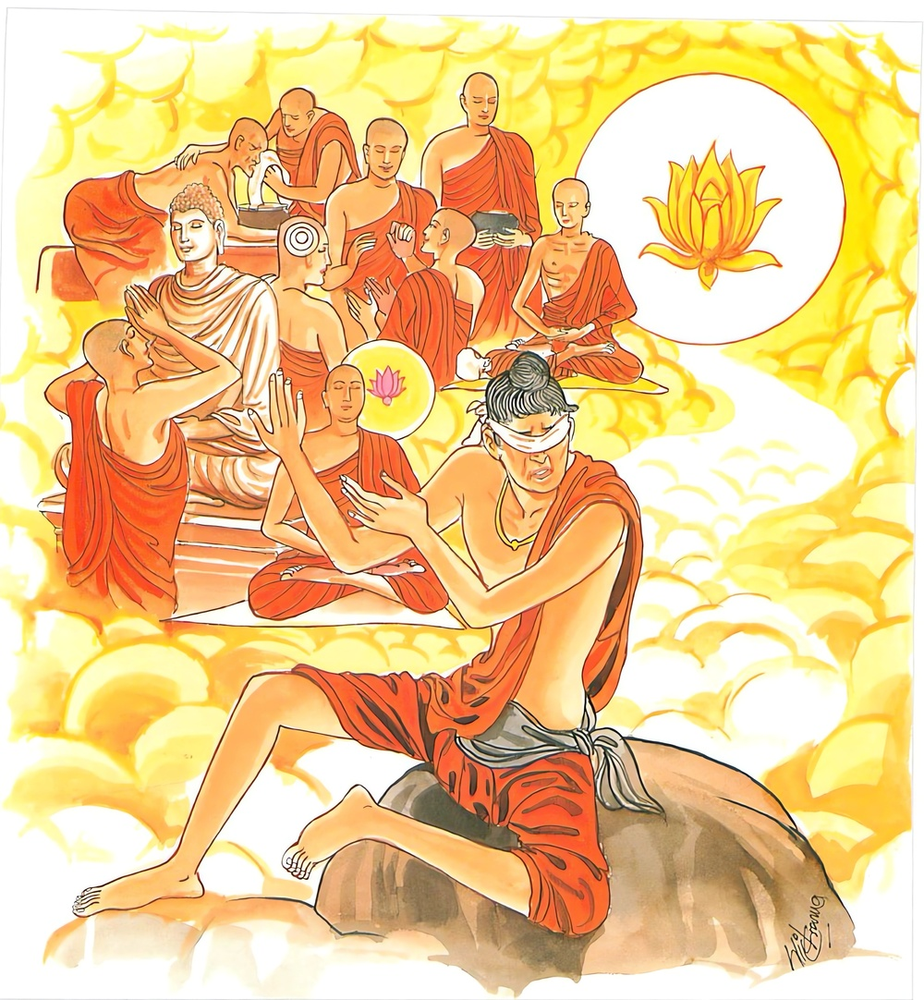

20-5 පධාන කම්මික තිස්ස තෙරුන් පිළිබඳ කථා පුවත
මෙම කතාව සද්ධර්ම සාගරයෙන් ද කියවන්න.
උට්ඨානකාලම්හි අනුට්ඨහානො
යුවා බලී ආලසියං උපෙතො
සංසන්නසඞ්කප්පමනො කුසීතො
පඤ්ඤාය මග්ගං අලසො න වින්දති.
වීර්ය්ය කරන්නට සුදුසු කල්හි වීර්ය්ය නොකරණ මහණ තෙම ප්රථම යෞවනයෙහි සිටියේ ද, කායබලසම්පන්න වූයේ ද, ඉදින් ආලස්යයෙන් යුක්ත වූයේ නම් (බඩ පුරා බත් වළඳා පියා කිසි ද මහණදමක් නොකොට වැද හෝනේ ම වේ ද), (කාමවිතර්කාදී තුන් විතර්කයන් විසින්) මොනොවට යට ගලන ලද සම්යක්සංකල්ප චිත්ත ඇති, කුසීත වූ ඒ මහ මැලියා ප්රඥායෙන් දැක්ක යුතු ආර්ය්යමාර්ගය නො ලබන්නේ ය. (නැතහොත් ලොවී ලොවුතුරු ප්රඥාවට උපායක් නොලබන්නේ ය.)

"උට්ඨාන කාලමහි” යන මේ ධර්ම දේශනය ශාස්තෲන් වහන්සේ ජේතවනාරාමයේ වැඩවාසය කරද්දී, "පධාන කර්මික තිස්ස” තෙරුන් නිමිති කරගෙන දේශනා කළහ. සැවැත් නුවර වාසී සත්සියයක් කුල පුත්රයෝ බුදුන් වෙත පැවිදිවි, කර්මස්ථාන ගෙන ආරණ්යයට වැඩම කළහ. ඔවුන් අතර එක් නමක් එහිම නැවතුනි. ඉතිරි අය ආරණ්යයේ මහණ දම් පුරමින් රහත්බවට පත්වී ලබාගත් ගුණය බුදුන්ට පවසමුයි නැවත සැවත් නුවරට වැඩම කළහ. ඔහු සැවත් නුවරින් යොදුනකට පමණ ඈත. එක් ගමක පිඬු පිණිස හැසිරෙනු දැක එක් උපාසක වරයෙක් කැඳ බත් ආදිය පුදා අනුමෝදනය අසා දෙවන දිනයට ද ආරාධනා කළේය. ඔවුහු එදිනට සැවතට ගොස් පාසිවුරු තබා සවස් කාලයේ බුදුන් වෙත එළඹ වැඳ වාඩි වුහ. බුදුහු ඔවුන් වෙත අතිශය සතුට දන්වමින් පිළිසඳර කථාවෙහි යෙදුනහ. අනතුරුව නැවතී සිටි භික්ෂුව මෙසේ සිතුවේය. බුදුරජාණන් වහන්සේ මොවුන් සමග පිළිසඳර කරන්නේ මුවනොපොහොනාසේ සතුටු බව පවසති. මම මාර්ගඵල නොලත් හෙයින් මා සමග කථා නොකරති. අද රහත් ඵලයට පත්ව බුදුන් වෙත එළඹ මා සමග කථා කරවමියි සිතුවේය. එම භික්ෂූන් වහන්සේලා ද ස්වාමීනි අප එන අතරමග එක් උපාසකවරයෙකු විසින් හෙට දානය සඳහා ආරාධනා ලදිමු. අළුයම එහි යන්නෙමුයි බුදුන්ගෙන් අවසර ලැබුහ.
මේ අතර උන්වහන්සේලාගේ සහායක භික්ෂුව මුළු රැ සක්මන් කරන්නේ නිදිමතින් සක්මන් මළුවේ කෙළවර එක් ගල්පුවරුවක වැටුනි. උකුල් ඇටය බිඳුනි. ඔහු මහ හඩින් මුරගෑවේය. ඔහුගේ සහායක යතිවරු ශබ්දය හඳුනාගෙන ඔබ මොබ සෙවුහ. පහන් දල්වා ඔහුට කළයුතු කාර්යය කරන්නවුන්ට නොදැනීම පහන් වුනි. උන්වහන්සේලාට යාමට අවකාශ නොලැබුනි. අනතුරුව ශාස්තෲන් වහන්සේ ඔවුන්ගෙන් ඇයි මහණෙනි. භික්ෂාචාර ගමට නොයන්නහුද? ඇසුහ. එසේය ස්වාමීනියි කියා මේ තොරතුරු දැනුම් දුන්හ. මහණෙනි මේ භික්ෂුව දැන් පමණක් නොව පෙරද ඔබ වහන්සේලාගේ ලාභ සත්කාර වැළැක්වී යයි පවසා ඔවුන් විසින් ඉල්ලන ලද්දේ අතීත පුවත ගෙන හැර දැක්වුහ.
යම් කෙනෙක් පළමුව කළ යුතු දේ පසුව කිරීමට කැමති වේද ලුණුවරණ දර තැබු තැනැත්තා සේ පසුව තැවීමට පත්වේ.
එම වරණ ජාතකය විස්තර කර දුන්හ. එදින එම පන්සියයක් භික්ෂූහු තරුණයෝ වුහ. කම්මැලි තරුණයා මේ භික්ෂුවයි. ආචාර්ය වරයා බුදුරජාණන් වහන්සේය. බුදුහු මෙම දේශනය ගෙන හැර දක්වා මහණෙනි ! යමෙක් උත්සාහවත් කාලයේ උත්සහ නොකර අසම්පන්න සංකස්ස ඇතිව කුසීත වුවේ ධ්යාන ආදී භේදයට විශේෂ අධිගම්යයකට පත් නොවේයයි පවසා මේ ගාථාව දේශනා කළහ.
වෙර දැරිය යුතුම කල වෙර දිරිය නොදරා
අලසකම පෙර දැරිව තරුණ කල දෙදරා
මග නුවණ නොලබා - දහම් මග අවුරා
කම්මැලිය, මග තැවෙයි කෙලෙස් මල නො උදුරා
වීරිය කළයුතු කල්හී විර්යය නොකොට, තරුණයන් වුයේද ශක්තිමත් කෙනෙක් වුවේද අලස බවින් යුතු වේ නම්, යටපත් කරන ලද තබන ලද සම්යසංකල්ප හා සිත් ඇති කුසීතවූ අලසයා නුවණක් දැක්කයුතු ආර්ය මාර්ගය ප්රඥාවට උපායක් නො ලබයි.
එහි අනුට්ඨහානො යනු උත්සහ නොවන්නේ වෑයම් නොකරන්නේ, යුවාබලී පඨම වයසේ සිටියේ බල සම්පන්නව සිටි වයසේත් අලසබැවින් යම්සේ වෙයි. ආහාරගෙන නිදාගනී. සංසන්නසඬකප්පමනොති මිථ්යා විතර්ක තුනකින් යහපත් සේ අවසන් වු සම්මා සඞ්කප්ප සිත් ඇත්තේ කුසීතො වීර්යය නොමැතිව, අලසේ මහා කම්මැලියෙක්ව පඤ්ඤාය ප්රඥාවෙන් දැක්විය යුතු අරියමග්ගං නොදකිනේ - නවින්දති - නොලබන්නේය ආර්ය මාර්ගය යන අර්ථයි.
දේශනය අවසානයේ බොහෝ ජනයා සෝවාන් ආදී මාර්ග ඵලයන්ට පැමිණියහ.